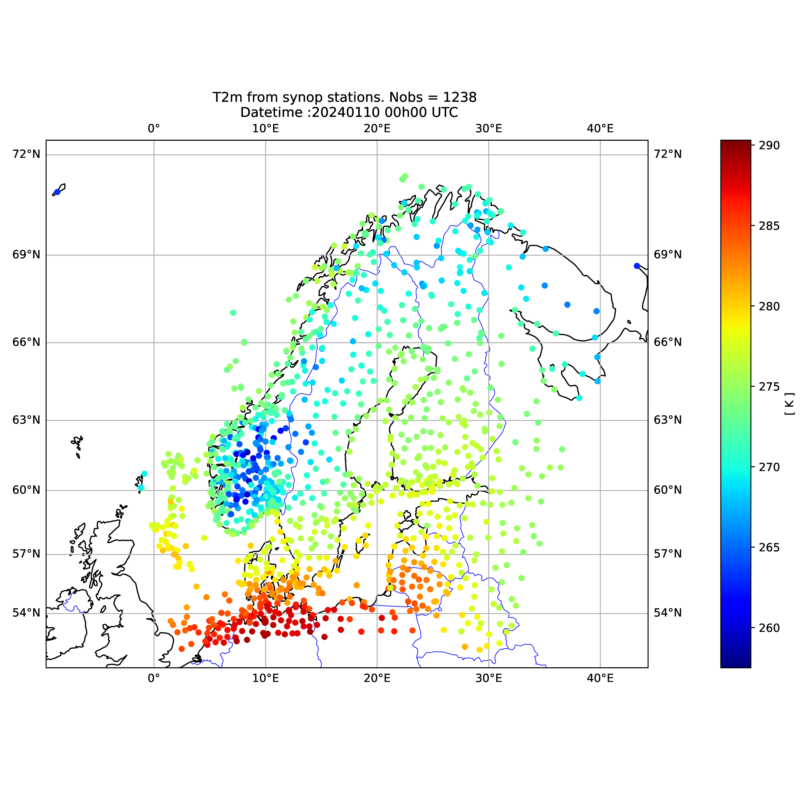

Integration with the python ecosystem
The choice to return query results as a Python dictionary is deliberate and central to the design of odb4py.
Using a dictionary provides a flexible and interoperable data structure, where column names are used as keys and the associated values correspond to the retrieved ODB rows. This approach ensures seamless compatibility with modern Python scientific libraries such as pandas and xarray.
As a result, the retrieved data can be easily converted into a pandas.DataFrame for further analysis and processing.
This enables users to perform:
Statistical analysis
Data filtering and aggregation
Visualization
Export to the ODB flat format ODB2 using pyodc
Let’s consider the previous code by selecting all the observation types.
#-*- coding: utf-8 -*-
import pandas as pd
from dateime import datetime
# utils module
from odb4py.utils import OdbObject , SqlParser
# core module
from odb4py.core import odb_dict
# Start
now = datetime.now()
# The previous code
...
...
# SQL request
# Let's get the TEMP data (obstype = 5 ) and the coordinates lat/lon in degrees
sql_query="SELECT statid , obstype, varno, degrees(lat) , degrees(lon) , obsvalue FROM hdr, body WHERE obstype==5"
# Execute SQL query
data = conn.odb_dict(dbpath, sql_query, fmt_float=6 , pbar=True )
# Convert to pandas DataFrame
df = pd.DataFrame(data)
print(df)
conn.odb_close()
end = datetime.now()
duration = end - start
print("Runtime duration:" , duration )
Output :
******** New ODB I/O opened with the following environment
******* ODB_CONSIDER_TABLES=*
ODB_IO_KEEP_INCORE=1
ODB_IO_FILESIZE=32 MB
ODB_IO_BUFSIZE=4194304 bytes
ODB_IO_GRPSIZE=1 (or max no. of pools)
ODB_IO_PROFILE=0
ODB_IO_VERBOSE=0
ODB_IO_METHOD=5
ODB_CONSIDER_TABLES=*
ODB_WRITE_TABLES=*
[##################################################] Complete 100% (Total: 15991 rows)
statid@hdr obstype@hdr varno@body degrees(lat) degrees(lon) obsvalue@body
0 01400 5 2 56.54264 3.22379 281.000000
1 01400 5 29 56.54264 3.22379 0.690000
2 01400 5 7 56.54264 3.22379 0.004615
3 01400 5 3 56.54264 3.22379 -3.423517
4 01400 5 4 56.54264 3.22379 -0.727691
... ... ... ... ... ... ...
15986 12120 5 4 54.75000 17.53333 0.000000
15987 12120 5 2 54.75000 17.53333 202.500000
15988 12120 5 2 54.75000 17.53333 208.700000
15989 12120 5 3 54.75000 17.53333 35.863009
15990 12120 5 4 54.75000 17.53333 -3.137607
[15991 rows x 6 columns]
Runtime duration: 0:00:01.199248
Visualizing Retrieved Data
Once the data have been retrieved, they can be easily visualized using standard Python scientific libraries such as matplotlib and cartopy.
Because query results are returned as a Python dictionary, converting
the data into a pandas.DataFrame makes plotting straightforward.
The folowing example illustrates the retrieve of 2 meter temperature over the MetCoOp model domain. by considering the example above, we add the part which plots the retrieved geopoints and values.
#-*- coding: utf-8 -*-
import cartopy.crs as ccrs
import cartopy.feature as cfeature
import matplotlib.pyplot as plt
from mpl_toolkits.axes_grid1 import make_axes_locatable
from datetime import datetime
import pandas as pd
# odb4py utils and core
from odb4py.utils import OdbObject, SqlParser
from odb4py.core import odb_open , odb_dict odb_dca
# Start
start = datetime.now()
# Path
dbpath ="/path/to/CCMA"
# Connect
conn = odb_open ( database = dbpath )
# DCA files generation
if not os.path.isdir ( "/".join( ( dbpath, "dca"))) :
NCPU=4
status =conn.odb_dca ( database=dbpath, dbtype= "CCMA" , ncpu=NCPU )
# Select SYNOP t2m
sql_query="select statid ,\
degrees(lat) ,\
degrees(lon) ,\
varno ,\
obsvalue ,\
FROM hdr,body WHERE \
obstype==1 and varno ==39"
# Parse the query
p =StringParser()
nf =p.get_nfunc ( sql_query )
sql =p.clean_string ( sql_query )
# Execute the query
data=conn.odb_dict ( database =dbpath ,
sql_query =sql_query,
nfunc =nf ,
fmt_float = 5 ,
queryfile = None ,
poolmask = None ,
pbar = True ,
verbose = False )
# To pandas df
df = pd.DataFrame( data )
lats=df["degrees(lat)" ]
lons=df["degrees(lon)" ]
obs =df["obsvalue@body"]
# Domain boundaries ( +/-1 degree)
if len(lats) != 0:
ulat=max(lats)+1.
llat=min(lats)-1.
if len(lons) != 0:
ulon=max(lons)+1.
llon=min(lons)-1.
# Plot
fig = plt.figure(figsize=(10, 15))
ax = fig.add_subplot(111,projection=ccrs.Mercator())
ax.autoscale(True)
ax.coastlines()
ax.set_extent([llon, ulon ,llat ,ulat], crs=ccrs.PlateCarree())
ax.add_feature(cfeature.BORDERS, linewidth=0.5, edgecolor='blue')
ax.gridlines(draw_labels=True)
sc=plt.scatter ( lons, lats ,c=obs , cmap=plt.cm.jet ,marker='o',s=20, zorder =111,transform=ccrs.PlateCarree() )
plt.title( "T2m from synop stations. Nobs = 1238 \n Datetime :20240110 00h00 UTC" )
divider = make_axes_locatable(ax)
ax_cb = divider.new_horizontal(size="5%", pad=0.9, axes_class=plt.Axes)
fig.add_axes(ax_cb)
plt.colorbar(sc, cax=ax_cb)
plt.show()
# Close the databse
conn.odb_close()
# End
end = datetime.now()
duration = end - start
print("Runtime duration:" , duration )
Runtime duration: 0:00:03.77
{kind=link}

Example: visualization of ODB observations (MetCOop domain).
This workflow enables rapid visual diagnostics of observation coverage and spatial distribution, which are essential in data assimilation and forecast verification studies.